import os
import numpy as np
import pandas as pd
import matplotlib.pyplot as plt
import matplotlib.ticker as mticker
import matplotlib.dates as mdates
import matplotlib.cm as cm
from scipy.stats import gaussian_kde
from dotenv import load_dotenv
load_dotenv()
OLIST_DIR = os.path.join(os.environ["DATA_DIR"], "olist")
TEAL = "#458d8f"
TEAL_LIGHT = "#c5dfe0"
YEAR_COLORS = {2016: "#b0c4c4", 2017: "#458d8f", 2018: "#e8c84d"}
YEARS = [2016, 2017, 2018]
DELIVERED_ONLY = False # True → restrict to delivered orders; False → all statusesDRAFT Customer Analytics with Olist, Part 2: Exploratory Data Analysis
Python
Customer Analytics
Olist
Visualisation
A first look at the Olist e-commerce dataset through two lenses: year-of-order trends and customer acquisition cohorts. We look at product categories, geography, and delivery times — and find that aggregates regularly hide more than they reveal.
Before building models or computing metrics, we need to understand what the data actually looks like. In this post we explore the Olist e-commerce dataset — but with a deliberate methodological stance.
Aggregate statistics are seductive: a single number, a single bar, a clean answer. The problem is that they collapse time. A two-year dataset like Olist is a snapshot of a business that was changing rapidly. An average delivery time or a top-category ranking computed across all 100k orders tells us what was typical — it says nothing about whether things were getting better, worse, or shifting in composition.
We use two complementary lenses throughout:
- Year of order — the calendar year in which an order was placed. Useful for spotting operational trends (did delivery times improve?) and structural changes (did category mix shift?).
- Customer acquisition cohort — the year in which a customer made their first purchase. Useful for understanding what kind of customers Olist was acquiring over time and whether their behaviour differed.
In a business with meaningful repeat purchases these two lenses diverge: a 2016 cohort customer might place orders in 2017 and 2018, so their orders would appear in both the 2017 and 2018 year-of-order slices but belong to the 2016 cohort. Olist has a near-zero repeat purchase rate (explored further in post 4), so in practice cohort year and order year are almost identical here. We compute both properly and note where they differ.
For dataset setup and an introduction to all eleven tables, see Customer Analytics with Olist, Part 1: Data Setup.
Setup
orders = pd.read_csv(
os.path.join(OLIST_DIR, "olist_orders_dataset.csv"),
parse_dates=[
"order_purchase_timestamp",
"order_delivered_customer_date",
"order_estimated_delivery_date",
],
)
order_payments = pd.read_csv(os.path.join(OLIST_DIR, "olist_order_payments_dataset.csv"))
order_items = pd.read_csv(os.path.join(OLIST_DIR, "olist_order_items_dataset.csv"))
customers = pd.read_csv(os.path.join(OLIST_DIR, "olist_customers_dataset.csv"))
products = pd.read_csv(os.path.join(OLIST_DIR, "olist_products_dataset.csv"))
sellers = pd.read_csv(os.path.join(OLIST_DIR, "olist_sellers_dataset.csv"))
category_translation = pd.read_csv(
os.path.join(OLIST_DIR, "product_category_name_translation.csv")
)We build the base order set and cohort labels. DELIVERED_ONLY at the top of the setup chunk controls whether to restrict to delivered orders or include all statuses (default: all). The delivery time section always filters to orders with a recorded delivery date regardless of this flag.
# --- base order set (all statuses, or delivered-only) ---
delivered = (
orders[orders["order_status"] == "delivered"].copy()
if DELIVERED_ONLY else orders.copy()
)
delivered["year"] = delivered["order_purchase_timestamp"].dt.year
delivered["month"] = delivered["order_purchase_timestamp"].dt.to_period("M")
revenue_per_order = (
order_payments[order_payments["order_id"].isin(delivered["order_id"])]
.groupby("order_id")["payment_value"].sum()
.reset_index().rename(columns={"payment_value": "revenue"})
)
delivered = delivered.merge(revenue_per_order, on="order_id", how="left")
# --- customer acquisition cohort ---
# cohort_year = year of a customer's first delivered order
delivered_cust = delivered.merge(
customers[["customer_id", "customer_unique_id"]], on="customer_id"
)
first_purchase_year = (
delivered_cust
.groupby("customer_unique_id")["order_purchase_timestamp"]
.min().dt.year.rename("cohort_year").reset_index()
)
delivered_cust = delivered_cust.merge(first_purchase_year, on="customer_unique_id")Order volume and revenue over time
The monthly time series shows the shape of the business before we aggregate anything.
fig, ax1 = plt.subplots(figsize=(12, 4.5))
ax2 = ax1.twinx()
ax1.bar(monthly["month_dt"], monthly["orders"], width=20, color=TEAL_LIGHT, label="Orders")
ax2.plot(
monthly["month_dt"], monthly["revenue"] / 1e6,
color=TEAL, linewidth=2.5, marker="o", markersize=4, label="Revenue (R$ M)"
)
ax1.set_ylabel("Orders per month")
ax2.set_ylabel("Revenue (R$ million)")
ax1.xaxis.set_major_formatter(mdates.DateFormatter("%b %Y"))
ax1.xaxis.set_major_locator(mdates.MonthLocator(interval=2))
plt.setp(ax1.xaxis.get_majorticklabels(), rotation=45, ha="right", fontsize=8)
ax1.spines[["top"]].set_visible(False)
ax2.spines[["top"]].set_visible(False)
lines1, labels1 = ax1.get_legend_handles_labels()
lines2, labels2 = ax2.get_legend_handles_labels()
ax1.legend(lines1 + lines2, labels1 + labels2, loc="upper left", fontsize=9)
plt.tight_layout()
plt.show()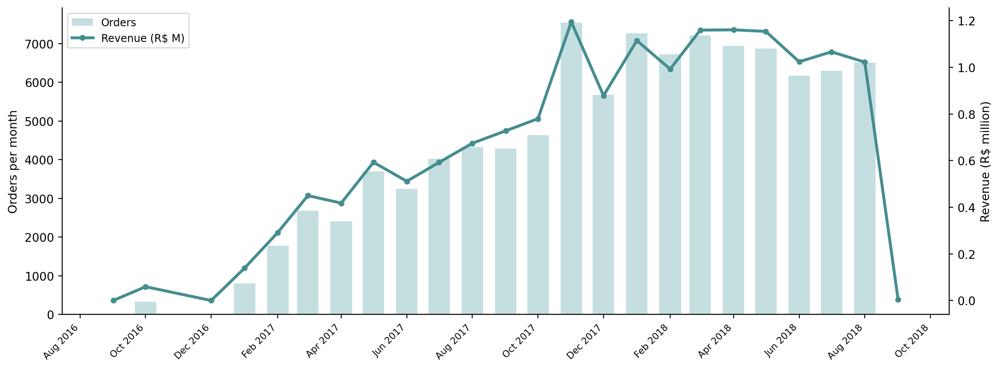
Volume and revenue track each other closely, as we would expect when AOV is stable. The 2016 data is thin — Olist was still ramping up. This means aggregates that pool all years are heavily weighted towards 2017 behaviour.
Orders by cohort over time
The monthly time series above pools all customers together. Splitting it by acquisition cohort shows which cohort drove the growth in each period and how long each cohort remained active.
cohort_month = (
delivered_cust
.groupby(["cohort_year", "month"])["order_id"].count()
.reset_index(name="orders")
)
cohort_month["month_dt"] = cohort_month["month"].dt.to_timestamp()
fig, ax = plt.subplots(figsize=(12, 4.5))
for year in YEARS:
grp = cohort_month[cohort_month["cohort_year"] == year]
ax.plot(
grp["month_dt"], grp["orders"],
color=YEAR_COLORS[year], linewidth=2, marker="o", markersize=3,
label=f"Cohort {year}",
)
ax.yaxis.set_major_formatter(mticker.FuncFormatter(lambda x, _: f"{x/1e3:.0f}k"))
ax.xaxis.set_major_formatter(mdates.DateFormatter("%b %Y"))
ax.xaxis.set_major_locator(mdates.MonthLocator(interval=2))
plt.setp(ax.xaxis.get_majorticklabels(), rotation=45, ha="right", fontsize=8)
ax.set_ylabel("Orders per month")
ax.legend(fontsize=9)
ax.spines[["top", "right"]].set_visible(False)
plt.tight_layout()
plt.show()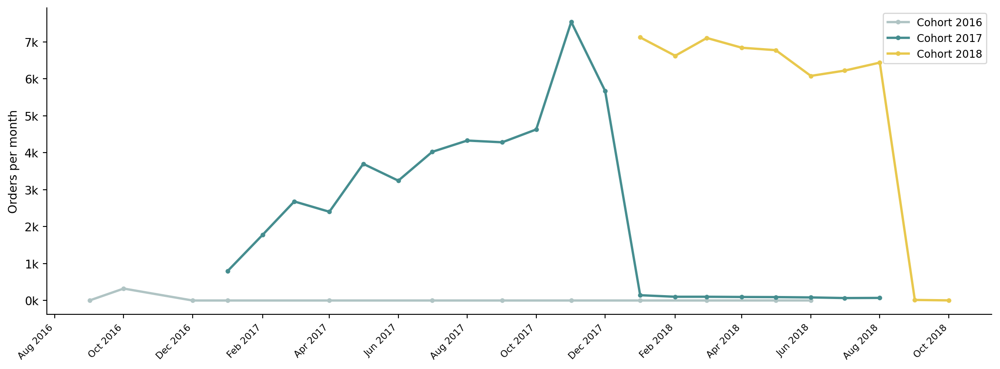
The 2016 cohort is small and active only in late 2016. The 2017 cohort dominates — it is the largest cohort and its acquisition window covers the Black Friday spike. The 2018 cohort was on a similar growth trajectory to 2017 but the dataset ends before its full year is observable. All three lines drop to near-zero immediately after the acquisition year, which is the repeat-rate picture expressed as a time series rather than a single percentage.
Top product categories
Top 15 per year
We compute the top 15 categories separately for each year so the ranking is not distorted by the unequal year sizes. top15 across years is the variable from the previous version of this post; replacing it with per-year rankings reveals what actually changed.
items_base = (
order_items[order_items["order_id"].isin(delivered["order_id"])]
.merge(products_en[["product_id", "category_en"]], on="product_id", how="left")
.merge(delivered_cust[["order_id", "year", "cohort_year"]], on="order_id")
.dropna(subset=["category_en"])
.drop_duplicates(subset=["order_id", "category_en"])
)
# Top 15 per year (by order count)
top15_per_year = {}
for year in YEARS:
top15_per_year[year] = (
items_base[items_base["year"] == year]
.groupby("category_en")["order_id"].count()
.nlargest(15).sort_values(ascending=True)
)
# Union of all top-15 categories (for the comparison chart)
top15_union = sorted(
set().union(*[s.index for s in top15_per_year.values()])
)
# Fixed color per category in the union
_cmap = cm.get_cmap("tab20", len(top15_union))
cat_colors = {cat: _cmap(i) for i, cat in enumerate(top15_union)}
cat_colors["Other"] = "#cccccc"fig, axes = plt.subplots(1, 3, figsize=(15, 6))
for ax, year in zip(axes, YEARS):
series = top15_per_year[year]
bars = ax.barh(series.index, series.values, color=TEAL)
ax.set_title(str(year), fontsize=12, fontweight="bold")
ax.xaxis.set_major_formatter(mticker.FuncFormatter(lambda x, _: f"{x/1e3:.0f}k"))
ax.spines[["top", "right"]].set_visible(False)
if ax != axes[0]:
ax.tick_params(axis="y", which="both", left=False, labelleft=False)
axes[0].set_xlabel("Orders")
fig.suptitle("Top 15 categories by year", y=1.01, fontsize=13)
plt.tight_layout()
plt.show()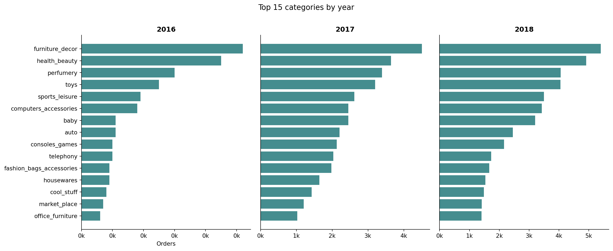
The top categories are broadly consistent across years — bed/bath/table, health/beauty, and sports/leisure appear in all three — but the ranking shifts and some categories enter or leave the top 15.
Category composition across years
A stacked bar chart makes the composition comparison explicit. Each bar represents one year; each colour is a category from the union of all three years’ top-15 lists; grey is everything else. Categories that grew their share push their colour wider; those that shrank hand share to other categories or to grey.
def category_stacked_bar(df, dim_col, union_cats, cat_colors, ax):
df2 = df.assign(
cat_g=df["category_en"].where(df["category_en"].isin(union_cats), "Other")
)
counts = (
df2.groupby([dim_col, "cat_g"])["order_id"].count()
.reset_index(name="n")
)
totals = counts.groupby(dim_col)["n"].sum().rename("total")
counts = counts.merge(totals, on=dim_col)
counts["share"] = counts["n"] / counts["total"]
pivot = counts.pivot(index=dim_col, columns="cat_g", values="share").fillna(0)
other = pivot.pop("Other") if "Other" in pivot else None
pivot = pivot[pivot.sum().sort_values(ascending=False).index]
if other is not None:
pivot["Other"] = other
lefts = np.zeros(len(pivot))
for cat in pivot.columns:
ax.barh(
pivot.index.astype(str), pivot[cat], left=lefts,
color=cat_colors.get(cat, "#cccccc"), label=cat, height=0.5
)
lefts += pivot[cat].values
ax.xaxis.set_major_formatter(mticker.PercentFormatter(xmax=1, decimals=0))
ax.spines[["top", "right"]].set_visible(False)
return pivot.columns.tolist()
fig, ax = plt.subplots(figsize=(11, 2.5))
cols = category_stacked_bar(items_base, "year", top15_union, cat_colors, ax)
ax.set_xlabel("Share of orders")
# Legend outside, two columns
handles = [
plt.Rectangle((0, 0), 1, 1, color=cat_colors.get(c, "#cccccc"))
for c in cols
]
ax.legend(
handles, cols, bbox_to_anchor=(1.01, 1), loc="upper left",
fontsize=7, ncol=1, frameon=False
)
plt.tight_layout()
plt.show()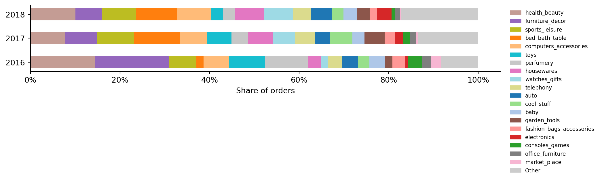
The “Other” (grey) slice is small and stable — the top-15 union accounts for the majority of orders in every year. Health/beauty and bed/bath/table are the widest slices across all years. Watch/gift categories grew noticeably from 2016 to 2017.
By customer acquisition cohort
We repeat the composition chart using cohort year (year of each customer’s first purchase) instead of order year.
fig, ax = plt.subplots(figsize=(11, 2.5))
category_stacked_bar(items_base, "cohort_year", top15_union, cat_colors, ax)
ax.set_xlabel("Share of orders")
ax.set_ylabel("Cohort year")
handles = [
plt.Rectangle((0, 0), 1, 1, color=cat_colors.get(c, "#cccccc"))
for c in cols
]
ax.legend(
handles, cols, bbox_to_anchor=(1.01, 1), loc="upper left",
fontsize=7, ncol=1, frameon=False
)
plt.tight_layout()
plt.show()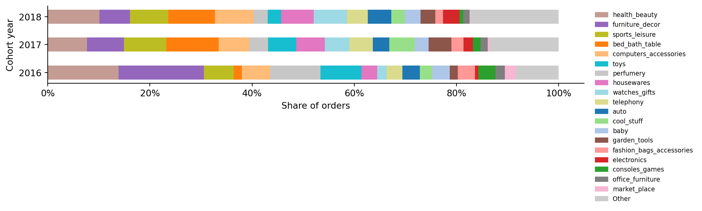
The two charts are near-identical, which is the expected consequence of a near-zero repeat rate: cohort year = order year for almost every customer. In a business with meaningful retention, the two charts would diverge — a 2016 cohort buying health/beauty in 2017 would shift category shares across years. Here they don’t, which confirms that what we observe reflects acquisition patterns, not changing preferences of existing customers.
Geographic distribution
By year
cust_state = (
delivered_cust
.merge(customers[["customer_id", "customer_state"]].drop_duplicates(), on="customer_id", how="left")
[["order_id", "year", "cohort_year", "customer_state"]]
)
top_states_per_year = {}
for year in YEARS:
top_states_per_year[year] = (
cust_state[cust_state["year"] == year]
.groupby("customer_state")["order_id"].count()
.nlargest(12).sort_values(ascending=True)
)fig, axes = plt.subplots(1, 3, figsize=(15, 5))
for ax, year in zip(axes, YEARS):
series = top_states_per_year[year]
ax.barh(series.index, series.values, color=TEAL)
ax.set_title(str(year), fontsize=12, fontweight="bold")
ax.xaxis.set_major_formatter(mticker.FuncFormatter(lambda x, _: f"{x/1e3:.0f}k"))
ax.spines[["top", "right"]].set_visible(False)
if ax != axes[0]:
ax.tick_params(axis="y", which="both", left=False, labelleft=False)
axes[0].set_xlabel("Orders")
fig.suptitle("Top 12 customer states by year", y=1.01, fontsize=13)
plt.tight_layout()
plt.show()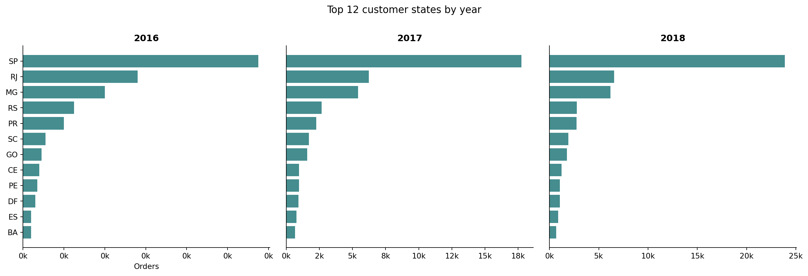
In 2016 only a handful of states generated meaningful volume — the platform was still São Paulo-centric. By 2017 Rio de Janeiro, Minas Gerais, and Rio Grande do Sul all grew substantially. By 2018 states such as Paraná and Santa Catarina had also entered the picture. A single geographic bar chart across the full dataset would make Olist look concentrated; the per-year view shows it was expanding geographically throughout the observation window.
By customer acquisition cohort
top_states_by_cohort = {}
for year in YEARS:
top_states_by_cohort[year] = (
cust_state[cust_state["cohort_year"] == year]
.groupby("customer_state")["order_id"].count()
.nlargest(12).sort_values(ascending=True)
)
fig, axes = plt.subplots(1, 3, figsize=(15, 5))
for ax, year in zip(axes, YEARS):
series = top_states_by_cohort[year]
ax.barh(series.index, series.values, color=YEAR_COLORS[year])
ax.set_title(f"Cohort {year}", fontsize=12, fontweight="bold")
ax.xaxis.set_major_formatter(mticker.FuncFormatter(lambda x, _: f"{x/1e3:.0f}k"))
ax.spines[["top", "right"]].set_visible(False)
if ax != axes[0]:
ax.tick_params(axis="y", which="both", left=False, labelleft=False)
axes[0].set_xlabel("Orders")
fig.suptitle("Top 12 customer states by acquisition cohort", y=1.01, fontsize=13)
plt.tight_layout()
plt.show()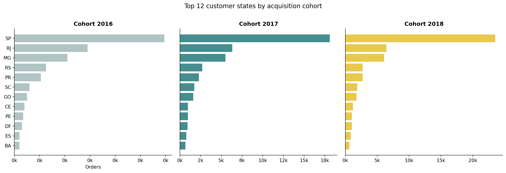
The cohort and order-year views are again nearly identical. In a business with higher repeat rates, cohort geography would be fixed at acquisition time — a 2016 São Paulo customer stays a São Paulo customer even if they reorder in 2018. Here there is almost no reordering, so the distinction collapses.
Delivery time distribution
By year
We use a kernel density estimate (KDE) rather than a histogram, and stack the three years vertically so the shape of each distribution is legible. The shared x-axis makes the comparison direct.
deliv = delivered_cust.dropna(
subset=["order_delivered_customer_date", "order_estimated_delivery_date"]
).copy()
deliv["delivery_days"] = (
(deliv["order_delivered_customer_date"] - deliv["order_purchase_timestamp"])
.dt.total_seconds() / 86400
)
deliv["days_vs_estimate"] = (
(deliv["order_delivered_customer_date"] - deliv["order_estimated_delivery_date"])
.dt.total_seconds() / 86400
)
deliv["on_time"] = deliv["days_vs_estimate"] <= 0x_range = np.linspace(0, 65, 400)
fig, axes = plt.subplots(3, 1, figsize=(9, 7), sharex=True)
for ax, year in zip(axes, YEARS):
data = deliv[deliv["year"] == year]["delivery_days"].dropna().clip(0, 65).values
if len(data) < 10:
ax.set_ylabel(str(year), rotation=0, labelpad=35, va="center", fontsize=10)
continue
kde = gaussian_kde(data, bw_method=0.12)
y = kde(x_range)
color = YEAR_COLORS[year]
ax.fill_between(x_range, y, alpha=0.4, color=color)
ax.plot(x_range, y, color=color, linewidth=2)
median = np.median(data)
p90 = np.percentile(data, 90)
ax.axvline(median, color="black", linestyle="--", linewidth=1.2, alpha=0.8)
ax.axvline(p90, color="black", linestyle=":", linewidth=1, alpha=0.6)
ax.text(median + 0.5, ax.get_ylim()[1] * 0.85 if ax.get_ylim()[1] > 0 else 0.05,
f"p50={median:.0f}d", fontsize=8)
ax.text(p90 + 0.5, ax.get_ylim()[1] * 0.6 if ax.get_ylim()[1] > 0 else 0.03,
f"p90={p90:.0f}d", fontsize=8)
ax.set_ylabel(str(year), rotation=0, labelpad=35, va="center", fontsize=10)
ax.set_yticks([])
ax.spines[["top", "right", "left"]].set_visible(False)
axes[-1].set_xlabel("Days from purchase to delivery")
fig.suptitle("Delivery time distribution by order year", y=1.01, fontsize=12)
plt.tight_layout()
plt.show()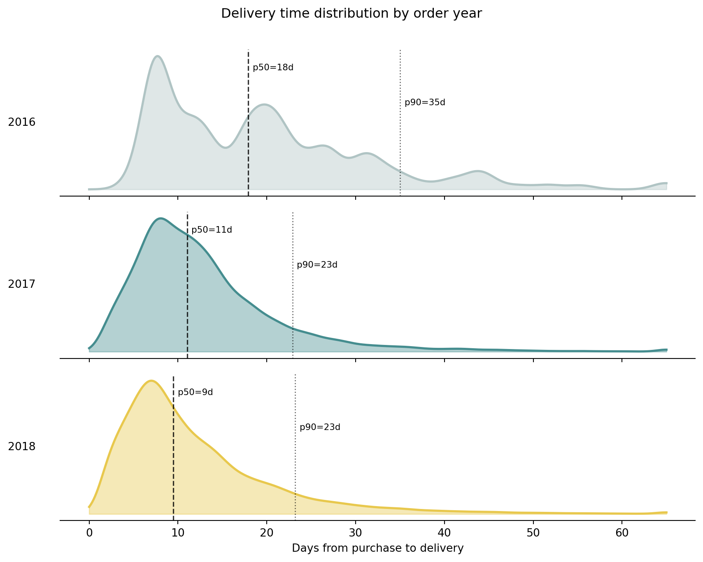
The median delivery time is nearly flat across years — roughly two weeks. The improvement shows in the tails: the 90th-percentile line shifts left from 2016 to 2017 to 2018, meaning the worst-served customers received their orders faster as the platform scaled its logistics network.
stats = (
deliv
.groupby("year")
.agg(
orders=("order_id", "count"),
median_days=("delivery_days", "median"),
p90_days=("delivery_days", lambda x: x.quantile(0.90)),
on_time_rate=("on_time", "mean"),
)
.reset_index()
)
stats.style.format({
"orders": "{:,}",
"median_days": "{:.1f}",
"p90_days": "{:.1f}",
"on_time_rate": "{:.1%}",
}).hide(axis="index")| year | orders | median_days | p90_days | on_time_rate |
|---|---|---|---|---|
| 2016 | 272 | 17.9 | 35.0 | 98.5% |
| 2017 | 43,426 | 11.0 | 22.9 | 93.4% |
| 2018 | 52,778 | 9.5 | 23.2 | 90.6% |
By customer acquisition cohort
The cohort view answers a different question: did customers who joined in different years experience systematically different delivery quality? A 2016 cohort customer who reordered in 2018 would experience 2018 logistics, not 2016 logistics. Given the near-zero repeat rate, nearly all cohort members have exactly one order, placed in the year they joined — so cohort and order-year views converge.
fig, axes = plt.subplots(3, 1, figsize=(9, 7), sharex=True)
for ax, year in zip(axes, YEARS):
data = deliv[deliv["cohort_year"] == year]["delivery_days"].dropna().clip(0, 65).values
if len(data) < 10:
ax.set_ylabel(f"Cohort {year}", rotation=0, labelpad=50, va="center", fontsize=10)
continue
kde = gaussian_kde(data, bw_method=0.12)
y = kde(x_range)
color = YEAR_COLORS[year]
ax.fill_between(x_range, y, alpha=0.4, color=color)
ax.plot(x_range, y, color=color, linewidth=2)
median = np.median(data)
p90 = np.percentile(data, 90)
ax.axvline(median, color="black", linestyle="--", linewidth=1.2, alpha=0.8)
ax.axvline(p90, color="black", linestyle=":", linewidth=1, alpha=0.6)
ax.text(median + 0.5, ax.get_ylim()[1] * 0.85 if ax.get_ylim()[1] > 0 else 0.05,
f"p50={median:.0f}d", fontsize=8)
ax.text(p90 + 0.5, ax.get_ylim()[1] * 0.6 if ax.get_ylim()[1] > 0 else 0.03,
f"p90={p90:.0f}d", fontsize=8)
ax.set_ylabel(f"Cohort\n{year}", rotation=0, labelpad=50, va="center", fontsize=10)
ax.set_yticks([])
ax.spines[["top", "right", "left"]].set_visible(False)
axes[-1].set_xlabel("Days from purchase to delivery")
fig.suptitle("Delivery time distribution by customer acquisition cohort", y=1.01, fontsize=12)
plt.tight_layout()
plt.show()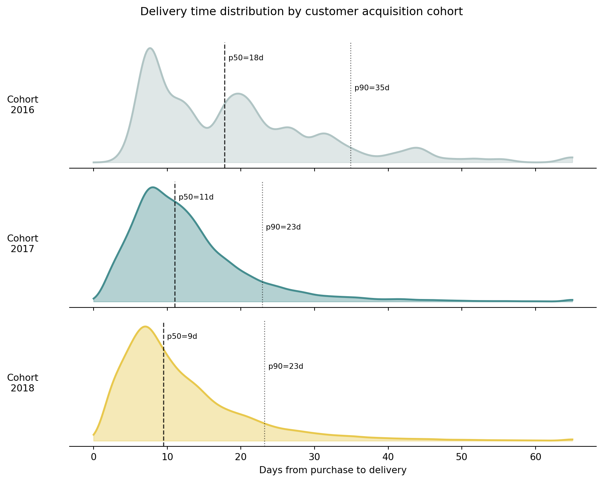
The near-identical shape across both views reinforces a key structural point: in a near-zero repeat-purchase business, cohort and period are almost the same thing. The cohort lens only starts paying dividends once retention is meaningful — which is precisely what we will investigate in the cohort analysis post (post 4).
Category composition by cohort over time
The stacked bar charts above show the composition of each cohort’s purchases in aggregate. A more informative view tracks each cohort’s buying pattern month by month, from their registration month through the end of the dataset. With near-zero repeat purchase rate we expect most of the signal to sit in the acquisition month — but the chart also reveals whether the rare repeat buyers chose different categories and whether category preferences shifted for customers who joined at different times.
# items_base has order_id, category_en, year, cohort_year
# we need the order month — merge from delivered_cust which inherited it from delivered
items_month = items_base.merge(
delivered_cust[["order_id", "month"]].drop_duplicates(), on="order_id"
)
items_month["cat_g"] = items_month["category_en"].where(
items_month["category_en"].isin(top15_union), "Other"
)
cohort_cat_month = (
items_month
.groupby(["cohort_year", "month", "cat_g"])["order_id"].count()
.reset_index(name="n")
)
# Compute shares within each cohort-month
month_totals = (
cohort_cat_month.groupby(["cohort_year", "month"])["n"].sum()
.rename("total").reset_index()
)
cohort_cat_month = cohort_cat_month.merge(month_totals, on=["cohort_year", "month"])
cohort_cat_month["share"] = cohort_cat_month["n"] / cohort_cat_month["total"]
cohort_cat_month["month_dt"] = cohort_cat_month["month"].dt.to_timestamp()
# Build category order: most prevalent first across all data, Other last
cat_order = (
cohort_cat_month[cohort_cat_month["cat_g"] != "Other"]
.groupby("cat_g")["n"].sum()
.sort_values(ascending=False).index.tolist()
) + ["Other"]fig, axes = plt.subplots(3, 1, figsize=(14, 11), sharex=True)
all_months = sorted(cohort_cat_month["month_dt"].unique())
for ax, year in zip(axes, YEARS):
data = cohort_cat_month[cohort_cat_month["cohort_year"] == year].copy()
# Pivot to months × categories, fill missing months with 0
pivot = (
data.pivot_table(
index="month_dt", columns="cat_g", values="share", fill_value=0
)
.reindex(all_months, fill_value=0)
)
# Reorder columns
ordered_cols = [c for c in cat_order if c in pivot.columns]
pivot = pivot[ordered_cols]
# Stacked area
bottom = np.zeros(len(pivot))
for cat in pivot.columns:
vals = pivot[cat].values
ax.fill_between(
pivot.index, bottom, bottom + vals,
color=cat_colors.get(cat, "#cccccc"), alpha=0.85, linewidth=0,
)
bottom += vals
# Order volume on secondary axis
vol = (
data.groupby("month_dt")["n"].sum()
.reindex(all_months, fill_value=0)
)
ax2 = ax.twinx()
ax2.plot(vol.index, vol.values, color="black", linewidth=1.5, alpha=0.6)
ax2.set_ylabel("Orders", fontsize=8, color="#555")
ax2.tick_params(labelsize=7)
ax2.spines[["top"]].set_visible(False)
ax.set_title(f"Cohort {year}", fontsize=11, fontweight="bold", loc="left")
ax.set_ylim(0, 1)
ax.yaxis.set_major_formatter(mticker.PercentFormatter(xmax=1, decimals=0))
ax.set_ylabel("Category share")
ax.spines[["top", "right"]].set_visible(False)
axes[-1].xaxis.set_major_formatter(mdates.DateFormatter("%b %Y"))
axes[-1].xaxis.set_major_locator(mdates.MonthLocator(interval=2))
plt.setp(axes[-1].xaxis.get_majorticklabels(), rotation=45, ha="right", fontsize=8)
# Shared legend below all panels
handles = [
plt.Rectangle((0, 0), 1, 1, color=cat_colors.get(c, "#cccccc"))
for c in cat_order
]
fig.legend(
handles, cat_order,
loc="lower center", ncol=4, fontsize=7,
bbox_to_anchor=(0.45, -0.12), frameon=False,
)
plt.tight_layout()
plt.show()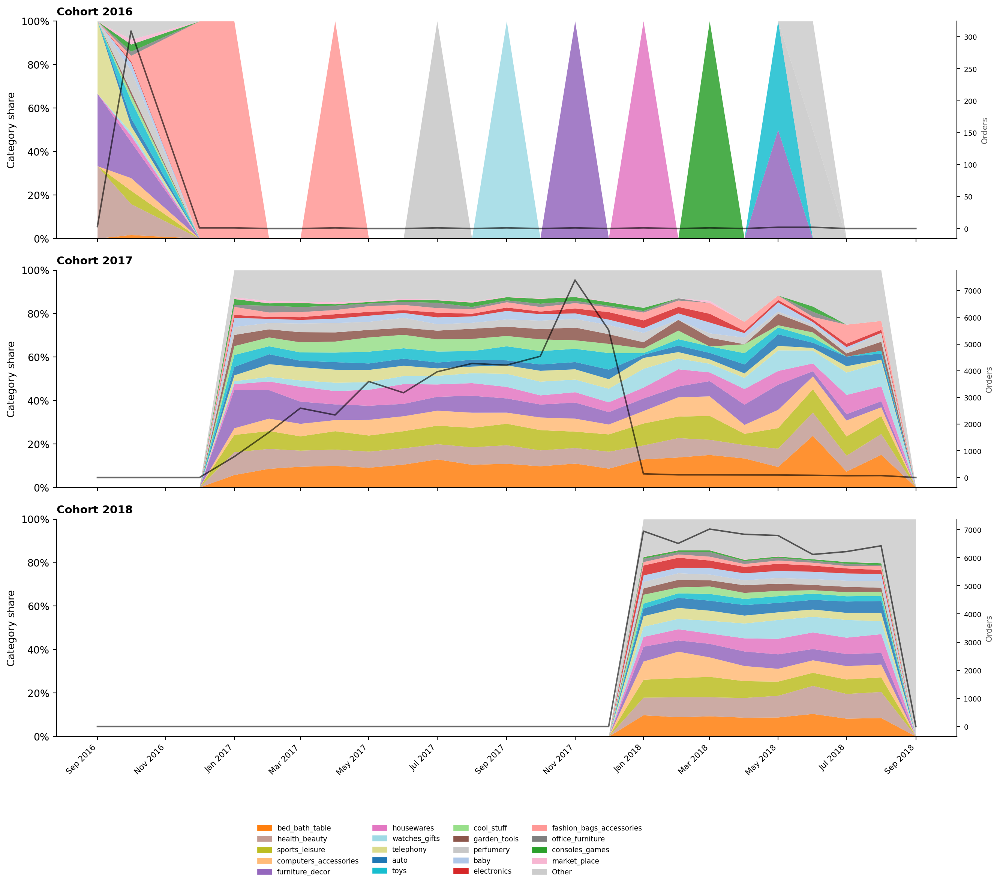
The order volume line (black) makes the near-zero repeat rate visible directly: each cohort’s purchases are almost entirely concentrated in their acquisition year. The coloured composition changes across months within that active window reveal which categories customers chose in different months of the year — health/beauty and bed/bath/table are consistently present, while some categories show seasonal variation. The rare orders that appear in later years (tiny volume ticks outside the main active window) show largely the same category mix, suggesting that repeat buyers are not systematically different in their product preferences.
Seasonality
We close with seasonality, keeping it brief: the weekday pattern is the one dimension where the aggregate is trustworthy because it holds consistently across all three years.
weekday_order = ["Monday", "Tuesday", "Wednesday", "Thursday", "Friday", "Saturday", "Sunday"]
wd = (
delivered
.assign(weekday=delivered["order_purchase_timestamp"].dt.day_name())
.groupby(["year", "weekday"])
.size()
.reset_index(name="orders")
)
year_totals = wd.groupby("year")["orders"].sum().rename("year_total")
wd = wd.merge(year_totals, on="year")
wd["share"] = wd["orders"] / wd["year_total"]
wd["weekday"] = pd.Categorical(wd["weekday"], categories=weekday_order, ordered=True)
wd = wd.sort_values(["year", "weekday"])
fig, ax = plt.subplots(figsize=(9, 4))
for year, grp in wd.groupby("year"):
ax.plot(
grp["weekday"].astype(str), grp["share"],
marker="o", markersize=5, linewidth=2,
color=YEAR_COLORS[year], label=str(year)
)
ax.yaxis.set_major_formatter(mticker.PercentFormatter(xmax=1, decimals=0))
ax.set_ylabel("Share of weekly orders")
plt.setp(ax.xaxis.get_majorticklabels(), rotation=15, ha="right")
ax.legend(fontsize=9)
ax.spines[["top", "right"]].set_visible(False)
plt.tight_layout()
plt.show()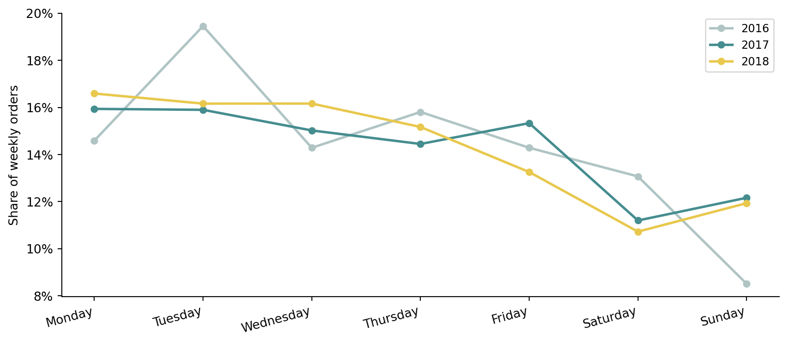
When a pattern holds across cohorts and across years — as the weekday rhythm does here — aggregating it is safe. When it does not (category mix, geography, delivery tails), aggregating destroys information. The question to ask before presenting any aggregate is: does this pattern hold within each year, or am I hiding a trend?
What we’ll explore next
This exploration has established the key structural facts:
- Category mix is stable across years — the aggregate top-15 is reliable, but growth trajectories differ.
- Geographic reach expanded year on year — state-level aggregates mask this expansion.
- Delivery tail shrank from 2016 to 2018 — the median hides the improvement; the p90 reveals it.
- Cohort ≈ order year in Olist — the cohort lens adds explanatory value only when retention is meaningful, which it is not here.
Next we’ll trace the full order pipeline stage by stage, measuring conversion and drop-off at each step: Purchase Funnel: From Order to Delivery (post 3).